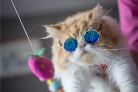
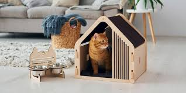
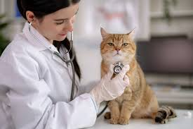
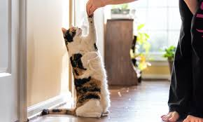
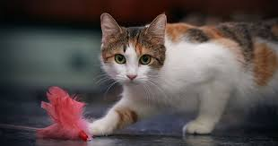

Step-by-Step Instructions
Step 1: Research Breeds
Learn about different cat breeds to find the one that suits you.
Step 2: Find a Store
Find a good PetSmart or shelter to adopt a cat.
You can find a local PetSmart here: Link to PetSmart
Step 3: Buy toys and food
Set up your home with necessary supplies like food, litter box, and toys. This is an important way to ensure your cat stays entertained and healthy.

Step 4: Bring Your Cat Home
Introduce your new cat to its new home!

Step 5: Schedule a Vet Visit
Take your new cat to the vet for a check-up and vaccinations. This ensures your cat stays healthy!
You can find a local Vet here: Link to vet

Step 6: Make Feeding Routine
You may either teach your cat to eat whenever or make a food schedule. It is easier for your cat to teach itself when to eat but if you want to stay engaged with your cat, you should set times to feed your cat.
Step 7: Train Your Cat
Help your cat get used to its new home and teach it how to behave if it does not know how to. This is important because your cat will drive you insane if you do not teach it how to do something simple like use the litter box!
You can find a local cat trainer here if you need one, but you should try training your cat yourself before referring it to a professional: Link to cat trainer

Step 8: Provide Care as Needed
Ensure regular grooming, playtime, and monitor health. It is not good if you do not stay engaged with your cat, because cats always need attention and care!
